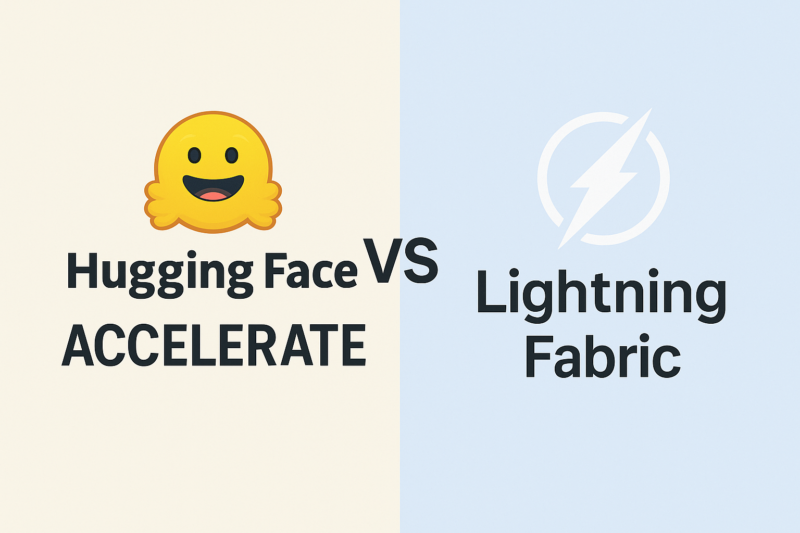

Hugging Face Accelerate vs PyTorch Lightning Fabric: A Deep Dive Comparison

When you’re working with deep learning models that need to scale across multiple GPUs or even multiple machines, you’ll quickly encounter the complexity of distributed training. Two libraries have emerged as popular solutions to simplify this challenge: Hugging Face Accelerate and PyTorch Lightning Fabric. While both aim to make distributed training more accessible, they take fundamentally different approaches to solving the problem.
Think of these libraries as two different philosophies for handling the complexity of scaling machine learning workloads. Accelerate acts like a careful translator, taking your existing PyTorch code and automatically adapting it for distributed environments with minimal changes. Lightning Fabric, on the other hand, functions more like a structured framework that provides you with powerful tools and patterns, but asks you to organize your code in specific ways to unlock its full potential.
Understanding the Core Philosophy
Hugging Face Accelerate was born from a simple but powerful idea: most researchers and practitioners already have working PyTorch code, and they shouldn’t need to rewrite everything just to scale it up. The library’s design philosophy centers around minimal code changes. You can take a training loop that works on a single GPU and, with just a few additional lines, make it work across multiple GPUs, TPUs, or even different machines.
The beauty of Accelerate lies in its transparency. When you wrap your model, optimizer, and data loader with Accelerate’s prepare function, the library handles the complex orchestration of distributed training behind the scenes. Your core training logic remains largely unchanged, which means you can focus on your model architecture and training strategies rather than wrestling with distributed computing concepts.
Lightning Fabric approaches the problem from a different angle. Rather than trying to be invisible, Fabric provides you with a set of powerful abstractions and tools that make distributed training not just possible, but elegant. It’s part of the broader PyTorch Lightning ecosystem, which has always emphasized best practices and reproducible research. Fabric gives you fine-grained control over the training process while still handling the low-level distributed computing details.
Code Integration and Learning Curve
When you’re starting with Accelerate, the learning curve feels remarkably gentle. Let’s imagine you have a standard PyTorch training loop. To make it work with Accelerate, you typically need to make just a few key changes: initialize an Accelerator object, wrap your model and optimizer with the prepare method, and replace your loss.backward() call with accelerator.backward(loss). The rest of your code can remain exactly as it was.
This approach has profound implications for how teams adopt distributed training. Junior developers can start using distributed training without needing to understand concepts like gradient synchronization, device placement, or communication backends. More experienced practitioners can gradually learn these concepts while their code continues to work.
Lightning Fabric requires a bit more upfront learning, but this investment pays dividends in terms of flexibility and control. Fabric encourages you to structure your code using its abstractions, which might feel unfamiliar at first but lead to more maintainable and scalable codebases. You’ll work with Fabric’s strategy system for distributed training, its device management for handling different hardware, and its logging integrations for experiment tracking.
The key insight here is that Fabric’s slightly steeper learning curve comes with corresponding benefits. Once you understand Fabric’s patterns, you’ll find it easier to implement complex training scenarios, debug distributed issues, and maintain consistency across different experiments.
Performance and Optimization Capabilities
Both libraries are built on top of PyTorch’s native distributed training capabilities, so their fundamental performance characteristics are quite similar. However, they differ in how they expose optimization opportunities to you as a developer.
Accelerate shines in its simplicity for standard use cases. The library automatically handles many optimization decisions for you, such as choosing appropriate communication backends and managing memory efficiently across devices. For many common scenarios, particularly when training transformer models, Accelerate’s automatic optimizations work excellently out of the box.
However, this automation can sometimes work against you when you need fine-grained control. If you’re implementing custom gradient accumulation strategies, working with unusual model architectures, or need to optimize communication patterns for your specific hardware setup, Accelerate’s abstractions might feel limiting.
Lightning Fabric provides more explicit control over these optimization decisions. You can choose specific distributed strategies, customize how gradients are synchronized, and implement sophisticated mixed-precision training schemes. This control comes at the cost of needing to understand what these choices mean, but it enables you to squeeze every bit of performance out of your hardware.
Code Examples and Practical Implementation
Hugging Face Accelerate Example
from accelerate import Accelerator
import torch
from torch.utils.data import DataLoader
# Initialize accelerator - handles device placement and distributed setup
accelerator = Accelerator()
# Your existing model, optimizer, and data loader
model = YourModel()
optimizer = torch.optim.AdamW(model.parameters())
train_dataloader = DataLoader(dataset, batch_size=32)
# Prepare everything for distributed training - this is the key step
model, optimizer, train_dataloader = accelerator.prepare(
model, optimizer, train_dataloader
)
# Your training loop stays almost identical
for batch in train_dataloader:
optimizer.zero_grad()
# Forward pass works exactly as before
outputs = model(**batch)
loss = outputs.loss
# Use accelerator.backward instead of loss.backward()
accelerator.backward(loss)
optimizer.step()
# Logging works seamlessly across all processes
accelerator.log({"loss": loss.item()})Lightning Fabric Example
from lightning.fabric import Fabric
import torch
from torch.utils.data import DataLoader
# Initialize Fabric with explicit strategy choices
fabric = Fabric(accelerator="gpu", devices=4, strategy="ddp")
fabric.launch()
# Setup model and optimizer
model = YourModel()
optimizer = torch.optim.AdamW(model.parameters())
# Setup for distributed training - more explicit control
model, optimizer = fabric.setup(model, optimizer)
train_dataloader = fabric.setup_dataloaders(DataLoader(dataset, batch_size=32))
# Training loop with explicit fabric calls
for batch in train_dataloader:
optimizer.zero_grad()
# Forward pass
outputs = model(**batch)
loss = outputs.loss
# Backward pass with fabric
fabric.backward(loss)
optimizer.step()
# Explicit logging with fabric
fabric.log("loss", loss.item())The code examples illustrate a key difference: Accelerate aims to make your existing code work with minimal changes, while Fabric provides more explicit control over the distributed training process.
Ecosystem Integration and Tooling
The ecosystem story reveals another important distinction between these libraries. Hugging Face Accelerate benefits from its tight integration with the broader Hugging Face ecosystem. If you’re working with transformers, datasets, or other Hugging Face libraries, Accelerate provides seamless interoperability. The library also integrates well with popular experiment tracking tools and supports various hardware configurations out of the box.
Lightning Fabric is part of the comprehensive PyTorch Lightning ecosystem, which includes not just distributed training tools, but also experiment management, hyperparameter optimization, and deployment utilities. This ecosystem approach means that once you invest in learning Fabric, you gain access to a complete toolkit for machine learning research and production.
Advanced Features and Customization
Memory Management and Optimization
Accelerate provides automatic memory management features that work well for most use cases. The library can automatically handle gradient accumulation, mixed precision training, and even advanced techniques like gradient checkpointing. These features work transparently, requiring minimal configuration from the user.
Lightning Fabric offers more granular control over memory management. You can implement custom gradient accumulation strategies, fine-tune mixed precision settings, and even implement advanced memory optimization techniques like activation checkpointing with precise control over which layers to checkpoint.
Hardware Support and Scalability
Both libraries support a wide range of hardware configurations, from single GPUs to multi-node clusters. Accelerate automatically detects your hardware setup and configures itself accordingly, making it particularly easy to move code between different environments without modification.
Fabric provides explicit configuration options for different hardware setups, giving you more control over how your training job utilizes available resources. This can be particularly valuable when working with heterogeneous hardware or when you need to optimize for specific cluster configurations.
Debugging and Development Experience
The debugging experience differs significantly between these libraries. Accelerate’s transparent approach means that debugging often feels similar to debugging single-GPU code. When issues arise, they’re usually related to distributed training concepts rather than library-specific problems.
Lightning Fabric provides more explicit debugging tools and better error messages when distributed training issues occur. The library’s structured approach makes it easier to isolate problems and reason about what’s happening across different processes.
Performance Benchmarks and Real-World Usage
In practice, both libraries perform similarly for most common use cases, since they’re both built on PyTorch’s native distributed training capabilities. The performance differences typically come from how well each library’s abstractions match your specific use case.
Accelerate tends to perform excellently for transformer models and other common architectures, where its built-in optimizations align well with typical usage patterns. Lightning Fabric can sometimes achieve better performance for custom architectures or specialized training procedures, where its fine-grained control allows for targeted optimizations.
Migration and Adoption Strategies
If you’re currently using single-GPU training and want to scale up, Accelerate offers the smoother migration path. You can often get distributed training working in a matter of hours, then gradually learn more advanced concepts as needed.
Lightning Fabric requires more upfront investment but provides a more sustainable long-term foundation. Teams that choose Fabric often find that the initial learning investment pays off through increased productivity and fewer distributed training issues over time.
Community and Support
Both libraries benefit from active, supportive communities. Accelerate’s community is closely tied to the broader Hugging Face ecosystem, with extensive documentation and examples focused on transformer models and NLP applications.
Lightning Fabric’s community is part of the larger PyTorch Lightning ecosystem, with strong representation across different domains of machine learning. The community provides extensive examples for computer vision, NLP, and other domains.
Making the Right Choice for Your Team
The decision between Accelerate and Lightning Fabric should consider several factors beyond just technical capabilities. Team expertise, project timeline, and long-term maintenance requirements all play important roles.
Choose Accelerate when you need to scale existing code quickly, when your team is new to distributed training, or when you’re working primarily with transformer models. The library’s minimal learning curve and automatic optimizations make it an excellent choice for rapid prototyping and iteration.
Choose Lightning Fabric when you need fine-grained control over training procedures, when you’re implementing custom training algorithms, or when you want to invest in a comprehensive framework that will serve multiple projects. The upfront learning investment is worthwhile for teams building production ML systems or conducting advanced research.
Future Considerations
Both libraries continue to evolve rapidly, with regular updates that add new features and improve performance. Accelerate’s development is closely tied to advances in the Hugging Face ecosystem, particularly around transformer models and large language models.
Lightning Fabric’s development focuses on providing cutting-edge distributed training capabilities and maintaining compatibility with the latest PyTorch features. The library often serves as a testing ground for new distributed training patterns that later influence the broader ecosystem.
Conclusion
Hugging Face Accelerate and PyTorch Lightning Fabric represent two excellent but philosophically different approaches to distributed training. Accelerate prioritizes simplicity and ease of adoption, making it possible to scale existing code with minimal changes. Lightning Fabric emphasizes flexibility and control, providing powerful tools for teams that need to customize their training procedures.
Neither choice is inherently better than the other. The right choice depends on your specific needs, team expertise, and project requirements. Both libraries will successfully help you move beyond single-GPU limitations and unlock the full potential of distributed computing for machine learning.
The most important step is to start experimenting with distributed training, regardless of which library you choose. Both Accelerate and Fabric provide excellent foundations for learning distributed training concepts and scaling your machine learning workloads effectively.